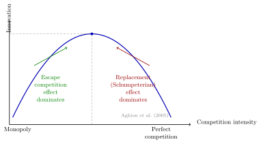

\(\Delta \pi^m\) is the monopolist’s value of exclusive access to the lower cost \(c_1\) (it is incremental because the firm already earns rents at \(c_0\)).
The competitive innovator earns \(32 > 20\) (the monopolist’s WTP). The monopolist gains less because it already earns \(\pi^m(c_0) = 16\) before innovating — it is partly replacing existing rents.
Replacement effect: visual comparison
Left panel: the incumbent monopolist already earns \(\pi^m(c_0)\) before innovating.
Innovation raises monopoly profit only by the increment \(\pi^m(c_1)-\pi^m(c_0)\).
Right panel: under competitive pre-innovation conditions, the innovation mostly creates rents.
The wedge equals pre-innovation monopoly rents, \(\pi^m(c_0)\).
The replacement effect is strongest when baseline monopoly rents are high.
Replacement effect: intuition
Takeaway
Holding everything else fixed, an incumbent monopolist has weaker incentives to innovate than a competitive industry because it is “replacing” its own pre-innovation rents.
Appropriability and imitation
If the innovation cannot be protected (instant diffusion / perfect imitation), competition drives price to \(c_1\) and the innovator’s WTP is zero.
Most IO policy questions start from imperfect but positive appropriability (patents, secrecy, lead time).
Empirical example: competition and innovation
Low competition: firms have little pressure to “escape.”
Intermediate competition: innovation incentives are strongest for neck-and-neck firms.
Very high competition: post-innovation rents are compressed, reducing innovation incentives.
Inverted-U evidence (QJE)
(aghionCompetitionInnovationInvertedU2005?) document an inverted-U relationship between product-market competition and innovation (patents/citations) in UK firms, consistent with “escape competition” incentives for neck-and-neck firms and a replacement effect for laggards.

Social Value of Innovation
Social planner: value of a cost reduction
After the private-value benchmarks, we now switch to the social objective.
Efficient output (price equals marginal cost)
\[
Q^{sp}(c) = A - c
\]
Total surplus (welfare):
\[
W(c) = \int_0^{A-c} (A - Q - c) \, dQ = \frac{(A-c)^2}{2}
\]
Interpretation
In this linear example, \(\Delta W = 2\,\Delta \pi^m\): the planner values the output expansion that the monopolist does not internalise.
This is the full increase in total surplus from lowering marginal cost.
In the linear benchmark, it is exactly twice the monopoly incremental profit.
Putting the benchmarks side-by-side
Environment
What the innovator captures
WTP / value
Monopoly (incumbent)
Incremental rents
\(\Delta\pi^m=\pi^m(c_1)-\pi^m(c_0)\)
Perfect competition (pre) + exclusive rights (post)
Mostly created rents
\(\Delta\pi^{pc}=\pi^m(c_1)\) if drastic; otherwise limit pricing profit
Social planner
Full surplus gain
\(\Delta W=W(c_1)-W(c_0)\)
Policy interpretation
Private incentives and social value need not align: \(\Delta W\) can exceed \(\Delta\pi\), but market power created by IPRs also generates static distortions. This is the basic patents trade-off.
Empirical example: private vs social returns
Measured producer gains capture only part of innovation’s value.
Consumer surplus from quality improvements can be very large.
This gap motivates policy tools that raise private appropriability.
Welfare gains from product innovation (JPE)
(trajtenbergWelfareAnalysisProduct1989?) estimates consumer and producer surplus gains from quality improvements in computed tomography (CT) scanners, illustrating that the social value of innovation can greatly exceed the innovator’s private returns.
Quick numeric check (optional)
Using the same calibration as earlier (\(A=18\), \(c_0=10\), \(c_1=6\)):
Monopoly: \(\pi^m(c_0)=16\), \(\pi^m(c_1)=36\), so \(\Delta\pi^m=20\)
Planner: \(W(c_0)=32\), \(W(c_1)=72\), so \(\Delta W=40\) (twice the monopoly gain)
Discussion question
In what sense is this “too little” innovation from a welfare perspective? What policy instruments could close the gap?
Innovation with Rivals and Entry
Incentives to innovate with rivals: intuition first
We now move from benchmark environments to strategic interaction with rivals and entry threat.
Innovation incentives are not monotone in “competition intensity.”
They depend on market structure (\(n\), differentiation, price vs quantity competition).
They depend on technology and institutions (protectability, spillovers).
Rule of thumb
More rivals reduce baseline profits (discouraging innovation), but can raise the value of becoming the low-cost firm (encouraging innovation).
Number of rivals: Cournot intuition
In linear Cournot, R&D incentives can follow an inverse-U as \(n\) rises:
Competition effect: more firms compress profits for everyone.
Competitive advantage effect: a cost lead is more valuable when many higher-cost rivals remain.
Which force dominates is an empirical question and can vary by industry.
Entry threat framework: incumbent vs entrant
Consider an incumbent monopolist facing a potential entrant:
Innovation lowers marginal cost from \(c_0\) to \(c_1<c_0\).
The entrant can profitably enter only if it obtains the innovation.
Let \(\pi^d(c_i,c_j)\) be firm \(i\)’s duopoly profit when own cost is \(c_i\) and rival cost is \(c_j\).
Timing:
Firms compete for innovation (patent auction / R&D race).
Innovation is allocated to the higher-valuation firm.
Entry decision and product-market competition occur after allocation.
Who values innovation more?
Payoff logic by winner:
If the incumbent wins: market stays monopoly, payoff \(\pi^m(c_1)\).
If the entrant wins: entry occurs, payoffs become \(\pi^d(c_0,c_1)\) for the incumbent and \(\pi^d(c_1,c_0)\) for the entrant.
This is more likely when products are close substitutes, so entry would sharply reduce incumbent profits.
Interpretation
For incumbents, innovation has a dual payoff: efficiency gain (lower cost) plus market-structure protection (deterring entry). That is the pre-emption channel.
Discussion: when does pre-emption fail?
Discussion question
Under what market conditions might an entrant have stronger innovation incentives than the incumbent? What features would reverse the pre-emption result?
Weak business-stealing effect: products are more differentiated, so entry hurts the incumbent less.
Low market-structure protection value: moving from duopoly to monopoly is not worth much to the incumbent.
High entrant upside from innovation: entrant post-entry profits \(\pi^d(c_1,c_0)\) are large (e.g., efficient entry, strong demand segment).
Large incumbent replacement effect: the incumbent already has substantial rents without innovating, so incremental gains are limited.
Weaker appropriability for incumbents (strong spillovers/imitation): innovation is less effective as an entry-deterrence tool.
Bottom line
Pre-emption fails when the incumbent’s entry-deterrence motive is weak and the entrant’s duopoly gain from innovating is strong.
Empirical example: strategic incentives and market share
Pre-emptive innovation patterns (ReStud)
(blundellMarketShareMarket1999?) find that higher market share and market value predict more patenting/innovations in UK manufacturing firms, consistent with strategic incentives (including pre-emptive innovation) in oligopolistic industries.
Endogenous R&D and Market Structure: Dasgupta and Stiglitz (1980)
Big Question
In Dasgupta-Stiglitz, firms choose R&D and entry is endogenous.
The central question is: what jointly determines innovation intensity and concentration?
This final model puts both objects, \(x\) and \(N\), inside one equilibrium system.
Concentration and innovation are jointly determined.
Higher R&D effectiveness (\(\alpha\)) supports higher concentration, while more elastic demand (\(\varepsilon\)) supports lower concentration.
Numerical check
Using \(\frac{1}{N^*}=\frac{1}{\varepsilon}\cdot\frac{\alpha}{1+\alpha}\):
If \(\varepsilon=2\) and \(\alpha=1\), then \(\frac{1}{N^*}=\frac{1}{4}\) so \(N^*=4\).
If \(\varepsilon=2\) and \(\alpha=3\), then \(\frac{1}{N^*}=\frac{3}{8}\) so \(N^*\approx2.7\).
Discussion question
If policy raises R&D effectiveness (\(\alpha\)), the model predicts more concentration (lower \(N^*\)).
When is that welfare-improving once we account for both dynamic gains and static mark-up losses?
Comparative statics and trade-offs
With \(P(Q)=\sigma Q^{-\varepsilon}\) and \(c(x)=\beta x^{-\alpha}\):
Here, \(\sigma>0\) is a demand-level (market-size) shifter.
\(\frac{\partial(1/N^*)}{\partial\alpha}>0\): more effective R&D tends to increase concentration.
\(\frac{\partial(1/N^*)}{\partial\varepsilon}<0\): more elastic demand tends to reduce concentration.
Neven & Röller : political economy of the welfare standard
Farrell & Katz: institutional/process critique of the “welfare standard debate”
Williamson (1972): the classic efficiency–market power trade-off formalization
Key takeaway
The “consumer surplus vs total surplus” are philosophical and political arguments: it changes (i) which efficiencies matter, (ii) how evidence is organized, and (iii) which cases are brought.
Kaplow’s choosing a welfare standard
Consumer welfare / consumer surplus (CS): weight consumers; producer gains may not offset consumer losses.
Total welfare (TW): CS + producer surplus (PS); standard Kaldor–Hicks social surplus.
Kaplow’s two core issues:
Distribution: does CS better protect poorer consumers?
Policy design: if distribution matters, should it be handled by competition law or by tax/transfer?
Kaplow’s central claim
The canonical welfare-econ logic in Kaplow:
If society cares about distribution, it is (usually) more efficient to address it through the tax/transfer system rather than by distorting product-market rules case-by-case.
Therefore, a switch from TW to CS to pursue distributional goals is typically a second-best instrument.
Implication:
A TW standard is often normatively preferred unless taxes/transfers are unavailable or severely constrained.
Practical reading of Kaplow for IO
For applied IO (mergers/abuse):
Under TW, an efficiency gain can offset a price increase if the net surplus rises.
Under CS, you often need pass-through: efficiencies must prevent consumers from being harmed.
This difference is large in cost-reduction mergers, vertical restraints, and platform settings where PS can increase even when short-run prices rise.
Merging firms and rivals can lobby/influence the agency.
Consumers are often diffuse and (in many designs) are modeled as not lobbying.
Question: Which welfare standard (CS vs TW) yields better outcomes when enforcement is politically influenced?
Main result (intuition)
A CS standard can be strategically robust in some political environments because:
TW gives more “credit” to producer gains (incl. gains captured by concentrated interests), which can amplify lobbying distortions.
If firms/rivals are the effective political actors, a CS standard can act as a commitment device against rent-seeking that masquerades as “efficiency”.
Conclusion: even if TW is normatively attractive, CS may dominate when institutions are captured or non-transparent.
Presumptions (e.g., certain concentration thresholds)
Type I vs Type II errors (false positives vs false negatives)
The welfare standard debate is often a proxy for deeper disagreements about how to manage uncertainty, litigation cost, and institutional competence.
IO takeaway: welfare standard vs decision procedure
In IO terms: - Welfare standard = objective function. - Decision procedure = constrained optimization with limited observables.
So the “real” question in many jurisdictions: - Which standard yields better implementable rules under information and political constraints?
Williamson (1968): the trade-off diagram, formalized
Core contribution:
A merger can create cost savings (efficiency rectangle) but also increase market power causing deadweight loss and transfers.
In the simplest partial equilibrium picture:
Price rises from competition toward monopoly
Output falls
Consumers lose (transfer + DWL)
Producers gain (transfer)
Efficiencies may offset DWL and can even raise TW.
Implementation in real policy
EU Commission: “consumers will not be worse off” (efficiencies in merger control)
In the EU Horizontal Merger Guidelines, the benchmark for efficiencies is explicitly consumer-facing:
The relevant benchmark is that consumers will not be worse off as a result of the merger (efficiencies must benefit consumers in the relevant markets, in a timely and verifiable way).
This is the practical embodiment of a CS-style constraint.
Operational implication (what gets litigated): - quantification and verifiability of efficiencies, - timing (short/medium run), - pass-through and competitive constraints.
EU enforcement priorities: “most harmful to consumers”
The Commission’s effects-based language in Article 102 enforcement priorities is framed in terms of conduct “most harmful to consumers,” consistent with consumer-harm screens.
Interpretation for IO:
Evidence is organized around price/quality/choice/innovation harms to customers, not around a fully aggregated surplus calculus.
Canada is the canonical example where merger review historically embedded a stronger total welfare logic via an efficiencies trade-off approach in agency guidance:
The Bureau’s Merger Enforcement Guidelines (2011) discuss efficiencies and their role in assessment.
Operational implication: - parties invest heavily in measuring cost savings and productive efficiencies, - the analysis is closer to a Williamson-style TW balancing exercise, - distributional concerns are less directly built into the test than in a strict CS regime.
Australia: “public benefit” / society-wide welfare language
Australia’s merger guidelines and authorization practice explicitly frame the objective in broad welfare terms (“welfare of Australians”, “society as a whole”, best use of resources):
This is naturally aligned with total welfare / net public benefit balancing.
Operational implication: - broader categories of benefits can enter (beyond short-run consumer prices), - the authority can explicitly weigh economy-wide resource allocation effects.
Summary and next week
Summary
Innovation value depends on the objective: \(\Delta \pi\) (private) versus \(\Delta W\) (social)
Replacement effect: pre-innovation rents reduce the incumbent’s incremental gain from innovation
With entry threat, innovation can be worth more because it changes market structure (monopoly vs duopoly)
In oligopoly, incentives reflect competing forces (competition effect vs competitive advantage effect)
Next week: patents and IPRs
Patents as incentives: monopoly rights vs. dynamic efficiency
Patent races and timing
Disclosure, licensing, and welfare
Horizontal and vertical innovation (brief)
References
Arrow, K. J. 1972. ‘Economic Welfare and the Allocation of Resources for Invention’. In Readings in Industrial Economics: Volume Two: Private Enterprise and State Intervention, edited by Charles K. Rowley. Macmillan Education UK. https://doi.org/10.1007/978-1-349-15486-9_13.
Dasgupta, Partha, and Joseph Stiglitz. 1980. ‘Industrial Structure and the Nature of Innovative Activity’. The Economic Journal 90 (358): 266–93. https://doi.org/10.2307/2231788.
Neven, Damien J., and Lars-Hendrik Röller. 2005. ‘Consumer Surplus Vs. Welfare Standard in a Political Economy Model of Merger Control’. International Journal of Industrial Organization 23 (9-10): 829–48. https://doi.org/10.1016/j.ijindorg.2005.08.011.
Williamson, O. E. 1972. ‘Economies as an Anti-Trust Defense: The Welfare Tradeoffs’. In Readings in Industrial Economics, edited by Charles K. Rowley. Macmillan Education UK. https://doi.org/10.1007/978-1-349-15486-9_7.
Williamson, Oliver E. 1968. ‘Economies as an Antitrust Defense: The Welfare Tradeoffs’. The American Economic Review 58 (1): 18–36. https://www.jstor.org/stable/1831653.
Social Value of Innovation